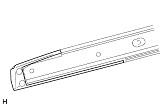
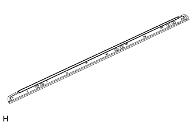
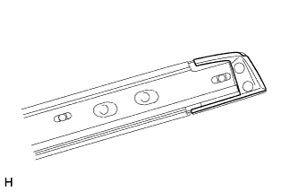

ROOF RACK > REASSEMBLY |
| 1. INSTALL FRONT ROOF RACK LEG CUSHION LH |
| Item | Temperature |
| Roof Rack Assembly | 20 to 30°C (68 to 86°F) |
Clean the roof rack assembly surface.
Using a heat light, heat the roof rack assembly surface.
Remove the double-sided tape from the roof rack assembly surface.
Wipe off any tape adhesive residue with cleaner.
|  |
Install a new front roof rack leg cushion.
Remove the peeling paper from the face of a new front roof rack leg cushion.
Install the front roof rack leg cushion as shown in the illustration.
| 2. INSTALL NO. 1 ROOF CARRIER PROTECTOR |
| Item | Temperature |
| Roof Rack Assembly | 20 to 30°C (68 to 86°F) |
Clean the roof rack assembly surface.
Using a heat light, heat the roof rack assembly surface.
Remove the double-sided tape from the roof rack assembly surface.
Wipe off any tape adhesive residue with cleaner.
|  |
Install a new No. 1 roof carrier protector.
Remove the peeling paper from the face of a new No. 1 roof carrier protector.
Install the No. 1 roof carrier protector as shown in the illustration.
| 3. INSTALL REAR ROOF RACK LEG CUSHION LH |
| Item | Temperature |
| Roof Rack Assembly | 20 to 30°C (68 to 86°F) |
Clean the roof rack assembly surface.
Using a heat light, heat the roof rack assembly surface.
Remove the double-sided tape from the roof rack assembly surface.
Wipe off any tape adhesive residue with cleaner.
|  |
Install a new front roof rack leg cushion.
Remove the peeling paper from the face of a new rear roof rack leg cushion.
Install the rear roof rack leg cushion as shown in the illustration.